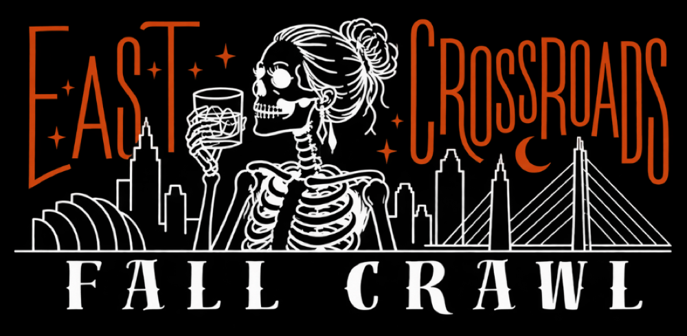
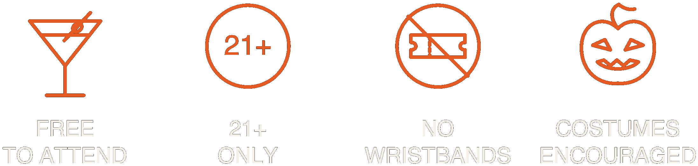
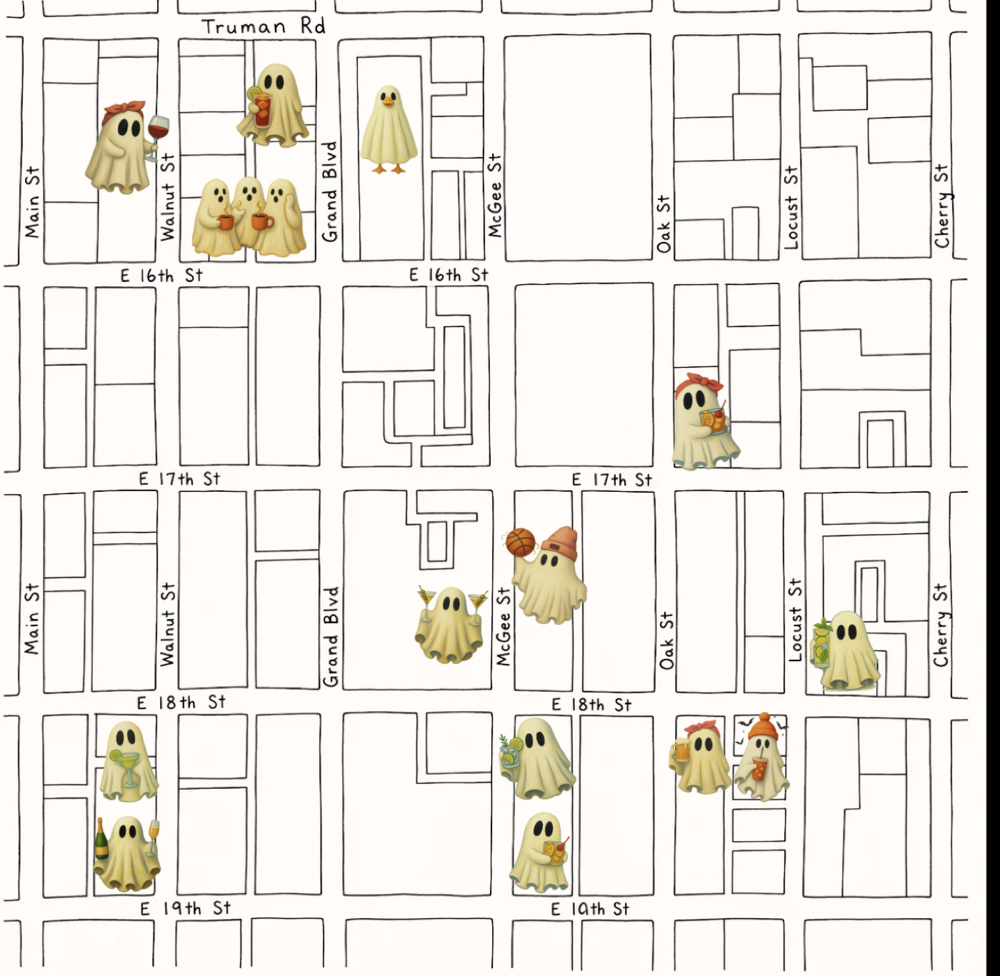

10.24.26
Saturday before Halloween
No tickets. No wristbands. No set route.
A build-your-own-adventure type of bar crawl.

Where
The East Crossroads, Kansas City. Walnut over to Locust, Truman Road down to 19th.

Teaser map. The full version with every name lands closer to the date.
What’s happening
Every spot runs its own night: cocktail features, activations, entertainment.
Suggested crawls
There is no official route. If you want one anyway, start here.